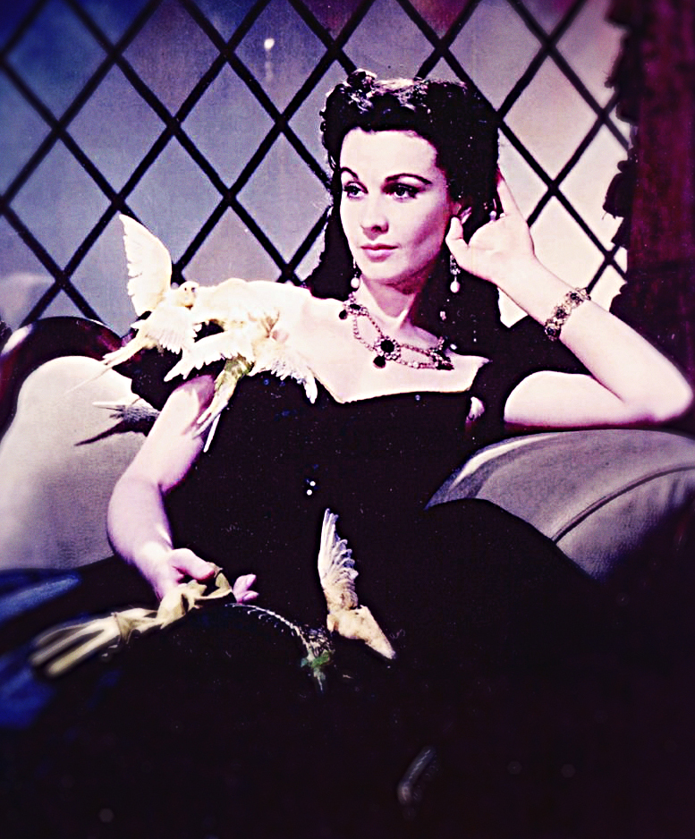
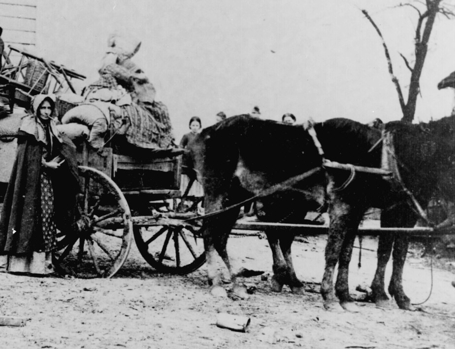
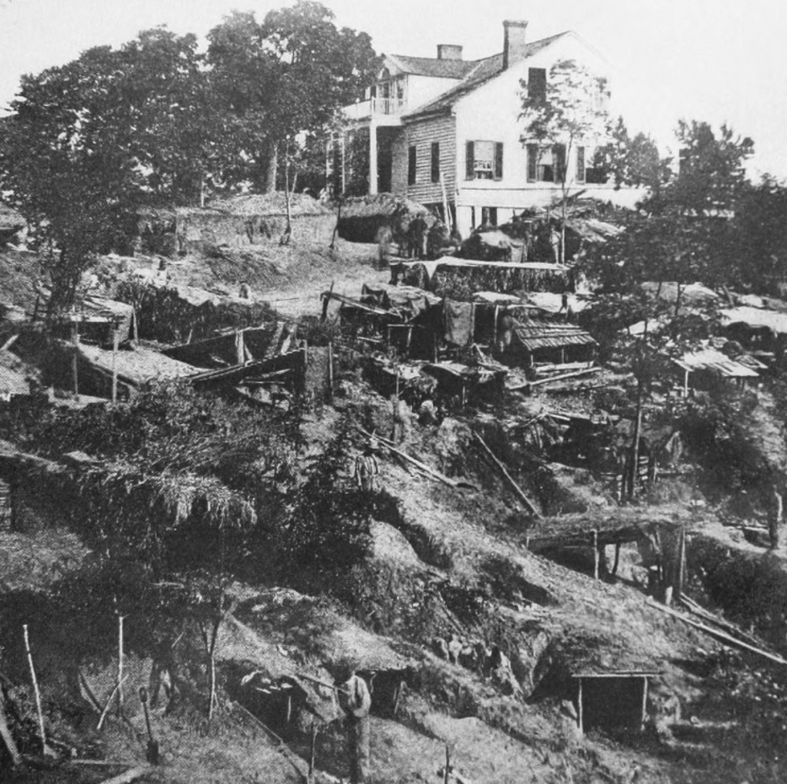
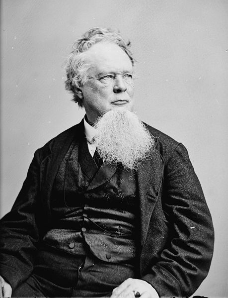
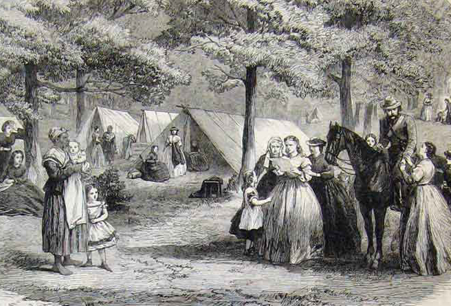

|
Two years after the Civil War ended, Sarah Anne Dorsey
published a thinly disguised account of her wartime saga in
a novel, Lucia Dare. The title character flees from
Louisiana in 1863 with her friend, Louise Branger,
Louise's two small children, and a number of the Branger
slaves. The party takes a caravan of wagons toward Texas
but halts after the children contract measles. Mrs.
Branger makes up a pallet for her son and daughter as they
toss about in delirium. After much suffering, they both die.
Since no coffins could be procured in what the narrator
calls "this trackless wilderness," the mother wraps their
bodies in a sheet and makes a funeral shroud from some of
the household goods she brought with her-a skirt, a
shawl, and a blanket. As the children are lowered into a
roadside grave, she collapses with grief. The bondsmen
shovel dirt over the bodies, and the party moves on, leaving
the unmarked grave behind."
As the story suggests, the refugee experience for
Southern women during the war was filled with danger,
illness, and catastrophic loss. This has been the case for
many refugees since the word entered the English language in
1685 to describe the Huguenots who left France after the
revocation of the Edict of Nantes. Students of refugees in
the modern era have recently begun to explore the
distinctive ways that women experience flight and exile, but
the literature on the American Civil War contains little on
the subject. Yet, as we shall see, most white Southern women
were especially ill-prepared for the refugee experience.
Many of them led parochial lives before 1861, focused almost
entirely on family and household. After 1861, they faced an
altogether different existence. With the war came the
breakup of innumerable households, a simultaneous rupture in
the antebellum bargain between men and women, and
unprecedented challenges to white women's assumptions about
class, ethnicity, race, and gender. These particular women
were literate white Protestants from the Confederate states
as well as the border states of Maryland, Kentucky, and
Missouri. Their fathers or husbands were members of the
slave-owning class (planters, affluent farmers, commercial
elites, or professionals), and most of them supported the
Confederacy with varying degrees of enthusiasm.
As many scholars have noted, Americans have long
celebrated the experience of being in motion across
geographic space. In one writer's pithy summary, it has been
hard for us to sit still, and even today most believe that
anyone should be free to pick up and go. But this was not
true for all Americans in the past. White women in the
early-nineteenth century usually traveled with male escorts,
and this custom seems to have lasted longest and been upheld
with the greatest fervor in the Old South. As Eliza F.
Andrews, of Georgia, recalled, a "male protector" was
"indispensable" for any respectable white woman who wished
to travel. This was true for middle-aged matrons as well as
schoolgirls, Andrews stated, for journeys of several miles
or two hundred miles. When a woman left home, her father,
husband, brother, cousin, or some other kinsman made the
arrangements and accompanied her throughout the trip,
whether she was going to church, visiting relatives, or
traveling to one of the fashionable spas. If she was
traveling by carriage, he sat next to her or rode on
horseback nearby. If she was traveling by horseback, he rode
beside her. If she was traveling by train, he bought the
tickets (since women from the slaveholder class rarely
carried money), took her to the station, carried her
luggage, sat with her during the trip, and at its end
accompanied her until she was safely in the hands of some
other kinsman in the bower of another household. In
carriages and on trains, women did not engage in
conversation with strangers if it could be avoided. Many
women wore veils when they traveled, the better to
discourage conversation and conceal their faces from prying
strangers.
Women experienced other restrictions on their geographic
mobility in their daily lives. Whenever a white woman
stepped beyond her front yard, custom dictated that she
needed a companion. Girls from slave-owning families did not
take walks alone on the streets of New Orleans or
Charleston, and young women did not make social calls by
themselves. As absurd as it might seem today, an unmarried
woman did not even cross a ballroom floor alone lest she
|

Though 1939's Gone with the Wind is
problematic in many aspects, it does a reasonably good job
of portraying Southern womanhood as it was understood before
the Civil War, and showing how those notions were compelled to evolve
when women--like Scarlett O'Hara--were left without homes
or men to rely upon.
|
appear to be too forward. During courtship, the same
restrictions applied. A maiden took a carriage ride with a
man only if an adult chaperone accompanied her, and some
families even thought it was inappropriate ("rather fast,"
as one matron recalled) for a girl to go horseback riding
with her fiance before the nuptials. Nor could adult women
easily escape prevailing customs. They did not go to the
post office or attend a camp meeting without an escort; they
dared not venture from home on election day when crowds of
men and boys filled the streets. Poor white women had more
latitude-it cannot really be called freedom-to go wherever
they wished. Because they lived outside the ambit of
so-called respectable society, no one seemed concerned if
they routinely traveled alone. One of the many ironies of
Southern women's history is that the more affluent a white
woman was, the less likely it was that she could travel
where and when she wished.
Why did Southerners make such a fuss about white women
traveling with a male companion? Why did it matter so much?
These arrangements were based on what might be called the
antebellum bargain between the sexes, that women gave up
autonomy in exchange for male protection, an assumption that
underlay the entire social order. This idea had special
implications for travel customs. White men did not believe
that white women were strong or sensible enough to cope with
the hazards of travel alone. If a woman fell ill, got lost,
or was robbed during a journey, a man should be there to
protect her from harm. Moreover, I white men in the
antebellum South placed the highest premium on the sexual
purity of white women. They feared that women could be
assaulted during a journey by other men, including other
whites, slaves, or free blacks. So a male escort was deemed
a practical necessity, a matter of respectability, and an
ideological obligation. Therefore a white woman who
disregarded these beliefs and traveled alone might be
suspected as inviting sexual activity. She was at the very
least what one teenage girl from Tennessee called less than
a "proper lady," and she might be a prostitute. Decent women
traveled under a man's protection, while only "public women"
went out alone.
Some white women bristled at these constraints on their
mobility, but most acquiesced to the customs of the time.
Their mothers raised them to travel only with male escorts
and to trust these men to guide them through harm. They
agreed that the world beyond the household could be a
dangerous place, so the antebellum bargain, to forsake
autonomy for protection, made sense to them. For most white
women, it seemed natural that a man should be at their elbow
whenever they went away from home for any length of time.
Nor did they wish to sully the family's reputation by
traveling alone or risk their own marriage prospects by
"fast" behavior, and they had no desire to be mistaken for
prostitutes. Most never attempted to travel alone, and many
felt distinctly uncomfortable if for some reason they were
left to themselves for more than a few moments during a
journey, say while waiting for an escort at a railroad
depot.
Women's lives were centered almost exclusively on the
household, which was the workplace as well as the dwelling
place. The typical slave owner's home most likely consisted
of four to eight rooms in a clapboard house with a chimney
and a front porch, rather than the white-pillared mansions
of lore. Lacking every modern convenience, these buildings
were often uncomfortable, hard to heat in the winter, and
hard to keep clean throughout the year. Most white women
labored in the house, sewing, cooking, or cleaning, and they
sometimes worked alongside slave women. Housework kept white
women close to home for long stretches of time, and contrary
to popular legend, they did not enjoy much leisure. Letitia
Dabney recalled that her mother, mistress of six slaves,
made clothes for everyone on the farm and added, "I never
saw her idle, day or night, except on Sunday." If the work
was tedious or distasteful, it was nevertheless a woman's
duty to get it done.
The household was also the center of emotional gravity,
the hearth in every sense, the place where most women gave
birth to their children, welcomed visits from kinfolk and
friends, and attended the deathbeds of their relatives. Here
much of their daily labor bore fruit, in the meals on the
table, the clothes their children wore, and the quilts that
covered the family at night. Here women kept their wedding
gifts, daguerreotypes, and mementos of the dead. Although
some women longed for a more stimulating existence, most
were profoundly attached to the household as a physical
place and as a symbol of all they held dear. As Virginian
Judith McGuire once remarked, "Home and its surroundings
must ever be our chief joy." "While shut out from it and its
many objects of interest," she observed, "there will be a
feeling of desolation."
This home-centered life inevitably bred a certain
provincialism among white Southern women. Even the
wealthiest women had no education beyond the academy
(roughly equivalent to a modern high school), for almost all
of the South's universities were closed to female students.
The great majority of women had never traveled outside of
the United States, most had never journeyed beyond the
South, and many had not traveled extensively within their
native region. Before the Civil War, many women had never
even been on board a train. One slave owner's son recalled
that his mother rarely traveled beyond the immediate
neighborhood, while his father and other male relatives were
"frequently out with their market and merchant wagons." Most
women of the slaveholder class were profoundly domestic in
their outlook. Recalling the small horizons of many white
women, Emma Tyler Blalock wrote in 1891 that "we had no
advantages of travel as our daughters have." Devoted to
their families, loyal to their friends, most of whom were
from similar social backgrounds, these women knew little of
the greater world.
The War Begins
The larger world began to reach into their households in
April 1861, of course, as thousands of men went off to war.
Many departing soldiers wondered how women would manage
alone, the men's apprehension not quite concealed by all the
bravado that the fighting would be over in a few weeks. Some
men remained at home, however, such as those planters and
businessmen exempted from military service, men who
purchased substitutes to fight for them, or men who were too
old for the draft. So the familiar customs persisted into
the early years of the war, for long and short trips. Many
women still expected, and received, male escorts, and many
still traveled wearing veils over their faces. Most women
wanted the old practices to continue for as long as
possible. One matron was afraid to leave Charlottesville for
Richmond to meet her son because "I don't know how to get
there, it rains incessantly & your Father is not here."
Another dreaded traveling alone from Richmond after her
husband, her "protector," died in an explosion in the city
in 1862.
As the battlefield and the hospital killed off thousands
of other white men, more Southern women had no choice but to
travel on their own. In early 1862, Fannie Hume, of Orange
County, Virginia, could still count on a few of her
relatives being available for escorts, but by the end of the
summer all of them were gone, either in the Confederate
army, dead, or fleeing the Union forces, so that she began
to travel by herself. Another "lady" had to drive her
carriage some thirty miles across central Kentucky to pick
up a paroled Confederate officer. A few women seem to have
adjusted to the new practices easily, such as the Virginia
matron who traveled alone with as much aplomb as she would
have exhibited with an escort of a "score of gentlemen," but
most viewed it as an unfortunate necessity.
To become a refugee, to leave the household, perhaps
forever, was another matter altogether. Some women, in no
immediate danger, had time to prepare carefully for their
departures. They put their households in good order,
gathered ample provisions and plenty of money, and traveled
along meticulously plotted routes to the homes of relatives.
Julia Gardiner Tyler, widow of President John Tyler, devoted
several months to putting her plantation in order before
leaving Virginia for Bermuda in 1863. More typically, women
had to leave suddenly as the Federal army bore down on their
communities. Some had postponed flight until the last
minute, and others were surprised into flight. Cornelia
Black and her spouse removed from New Orleans on a day's
notice, packing all night before escaping to the Quachita
River. These departures happened in various sections of the
South at different times, of course. Many women who resided
in northern Virginia had to set off quickly after
hostilities commenced in 1861. Others who lived in
relatively quiet places did not have to quit their homes
until the last months of the conflict. In the spring of
1865, Parthenia Hague, of Alabama, prepared to flee and then
kept a nighttime vigil listening for the "tramp of the
mighty Northern host."
Regardless of when they became refugees, most women found
it hard to leave their beloved homes. Years later, one
Virginian remembered the anguished cries of women evacuating
Fredericksburg, wailing, "My things! Oh, my things." meaning
the familiar objects they were leaving behind. What one
scholar has called the "small-scale" material culture of
|

This Virginia woman was left a refugee when
her home was destroyed early in the Civil War.
|
home meant a great deal to white women. As she packed to go,
Elvira Scott recalled ten years of effort to "improve,
ornament, and beautify" her house; every tree and bush in
the yard was "dear to me." After she took flight, Judith
McGuire's mind often returned to the Bible, books, and
pictures she had to leave behind, "things which seemed a
part of ourselves."
When women left home, many departed amid scenes of pure
bedlam. In May 1861, Anne Frobel met a crowd of her
neighbors at a railroad depot with "wagons, carts, drays,
wheelbarrows all packed mountain high with baggage," women
crying, and everyone looking "as forlorn and wretched as if
going to [an] execution." The impending arrival of the
armies in Mississippi in 1862 incited what Roxanna Cole
called an "indescribable" atmosphere of "terror and
confusion." With her children and several slaves, she
hurriedly threw some belongings into a wagon and took to the
road, some of her companions riding, others walking, many of
them weeping. Eliza Ripley, of New Orleans, provided an
unforgettable depiction of the throng of women, elderly men,
and children pouring out of the city in August 1862, tired,
exhausted, broken-down, sick, frightened, terrified human
beings-all roused from their beds by firing and fighting in
the very streets; rushing half-clad from houses being
riddled with shot and shell; rushing through streets filled
with men fighting hand to hand; wildly running they scarce
knew whither, being separated from children and wives and
mothers in the midst of the roar of battle, and no time to
look for them; no turning back.
In the midst of such chaos, white women understandably
felt they needed their male protectors more than ever. Some
white women took slave men to work as drivers, but they much
preferred their own kinfolk or, if they were not available,
a white man who was a family friend. When Margaret McCalla
vacated her Tennessee home in 1863, one Mr. Witt accompanied
her, her children, her mother, and some slaves as they
traveled by wagon across the Smoky Mountains to South
Carolina. Another matron in flight from Germantown,
Tennessee, to Tippah, Mississippi, persuaded a family friend
to drive her carriage because "I did not like to travel [in]
such fearful times with only a servant." White men shared
the expectation that they would escort their womenfolk, but
the war's exigencies prevented many people from adhering to
the old customs. After Mrs. Henry Lay moved to Huntsville,
Alabama, her husband hoped to join her from Arkansas, where
he served with the Confederacy. He promised her, "I will
come and take care of you somehow or somewhere," but he
could not do so.
Naturally most refugees found it difficult to learn to
travel alone. One young woman was almost overcome with panic
when she had to travel through Kentucky. Her husband was in
the Confederate service, her father was in Mississippi, and
she did not even know which road to take, crying, "Oh Sister
what is to become of me." When Frances W. Wallace, her
cousin, and their children had to travel from Vicksburg to
Jackson, Wallace was "very disconsolate" and thought it
"quite hard" to go forth alone, but go forth they did. Sarah
Morgan, the sheltered daughter of a judge, had to find
lodging for herself and several relatives near Mandeville,
Louisiana, in 1863. Feeling "timid" and hating to be what
she called a "pioneer," she managed to secure a place for
them to stay. Other women had to learn travel skills for the
first time, handling money, hiring wagons, negotiating with
innkeepers, most of them disliking it intensely but impelled
by practical necessity and the will to survive.
Many refugees covered a considerable geographic distance
in their wartime journeys. A few dashed to the nearest safe
place, twenty, thirty, or forty miles from home, and
lingered there, hoping they could return home quickly. Many,
though, traveled hundreds of miles before their odysseys
were done. Louise Clack left New Orleans for LaGrange,
Georgia, and then fled to Columbia, South Carolina, and back
to Georgia, residing in Augusta, Milledgeville, and finally
in Warm Springs, while the LeGrand sisters, also of New
Orleans, lived in Jackson, Mississippi, then Newnan,
Georgia, and later Thomasville, Georgia, before they fetched
up in eastern Texas. Some women exited the Confederacy
altogether and lived quietly in the North, while others went
into exile in Canada, Cuba, or western Europe.
Most refugees remained within the South, however, and
most left home with some destination in mind. Some headed
for the cities, while others moved to the countryside, but
almost all of them sought out the home of a relative-a
sister, a cousin, a grandfather, a niece-drawing upon the
large kinship networks so prevalent among the white Southern
population. They were hoping for shelter with someone they
could trust, an adequate supply of food, and physical
safety. Up until the last year or so of the war, the South
contained enclaves where the conflict had scarcely made a
mark. When Frances Wallace withdrew to Tuskegee in 1864 to
live with relatives, their larders were still bursting with
food. Residing with kinfolk, even for a short time, could do
much to reduce the discomfort of being a refugee. When
Eugenia Bitting stopped with an aunt and uncle at their
Georgia plantation, she not only ate well but learned
essential household skills. Her aunt, who realized that
slavery would probably end with the war, taught the newlywed
Bitting how to cook.
Daily Life
Daily life as a refugee was nevertheless marked by
extremes. In some instances refugees, paradoxically,
experienced a good deal of boredom. In others, anxieties
dominated daily life. Fearing theft, some women wore money
belts containing cash, gold, or silver beneath their
clothes, and others sewed their valuables into their
underclothes or the hems of their dresses. Many refugees
worried continually about finding a place to stay. The
affluent lodged in hotels along the way, but others
sometimes had to ask strangers to take them in, and during
the early phases of the war many white Southerners were
willing to do so. Meanwhile, refugees spent much of their
time waiting to hear about the outcome of a battle, the
progress of an army, or the migration of relatives, so that
they might determine their next move. Some women passed the
time by sewing or reading, while others entertained
themselves by playing chess, putting on tableaux, or making
social calls.
Women from the most privileged echelons of planter
society could even enjoy their migratory existence. In 1861,
Virginia Clay, wife of the Confederate senator and emissary
Clement C. Clay, was rich, well-traveled, childless, and a
member of a large family. She began traveling the region the
next year and boarded with relatives in Georgia, North
Carolina, Alabama, Virginia, Tennessee, and South Carolina.
Initially she sought out Georgia because many considered it
to be the safest and wealthiest Confederate state; she
returned in 1864 expecting a "care-free" summer. In November
1864 she told her husband in Canada to buy some silk
dresses, a sable fur, and a coral necklace, among other
items, all of which he dutifully purchased. (The booty
disappeared in Columbia, South Carolina, when Union troops
occupied the city in 1865.) She occasionally traveled with a
military guard, and wherever she resided Clay managed to
find enough food. Her social and political status buffered
her from the worst of the refugee experience.
Others, much less fortunate, traveled simply to dodge the
armies, with no destination in mind. They relied on hearsay,
newspapers, or the occasional hand-delivered letter for
information about where to go. Mrs. M. P. Stringer departed
New Orleans in 1863 and landed in Pascagoula, Mississippi,
with "the world before us-or rather the Confederacy, without
any particular point of destination." This kind of aimless
wandering was probably harder than leaving for a specific
place, for these women had to train their energies on
survival every day and live entirely in the present. As Kate
Stone confided to her diary, "We cannot bear to think of the
past and so dread the future." Some women moved almost
continuously, ricocheting from one place to another. Rebecca
Latimer Felton moved with her family through a series of
towns in 1864 and 1865, plunging from central Georgia down
to the Florida border. Esther Cheesborough shuttled between
Chester, Laurens, and Columbia, South Carolina, during the
last two years of the war, cut off from her home in
Charleston. Sometimes refugees miscalculated when choosing a
destination, such as the plantation mistress who traveled to
Alabama only to run headlong into the Union army.
Few accounts show a more chaotic pattern of mobility than
Judith McGuire's diary, published in 1867. The middle-aged
wife of a schoolteacher, she and her elderly husband had to
leave their home near Alexandria, Virginia, in May 1861. She
moved thirty-four times before the war concluded, crossing
the state in a zig-zag pattern to avoid the armies and
remain within Confederate lines. She and her husband stayed
for days, weeks, or months at a time at various locations,
sometimes joined by their adult daughters. One night McGuire
was separated from her husband at a railroad station amidst
a "shouting, hallooing, hurrahing" crowd of soldiers. Mrs.
McGuire quailed at the thought of going on alone, but a
minister offered "his purse and his protection" and
accompanied her to the next stop. Two days later her husband
arrived on a later train, and they continued their journey.
Typically the McGuires sought out relatives or good friends
for lodging, boarding free of charge, but they also rented
rooms whenever necessary. In January 1864 Judith McGuire
began working for the Confederate government in Richmond,
where she resided on seven separate occasions during the
conflict. She became a clerk in the Commissary Department
with numerous other "ladies," many of them refugees. Glad to
have a source of income, she was still living in the capital
when the war ended.
Refugees who were forced to travel without male escorts
expressed a good deal of embarrassment. Sarah Morgan was
distinctly uncomfortable when she and her sister turned out
to be the "only ladies" on a train in Louisiana in 1862, and
she felt "abashed" when she realized that a full regiment of
Confederate soldiers in Port Hudson was looking at them as
they rode by in a carriage. Pauline Heyward found herself
"very uneasy" at the gallery of strange faces at a railroad
station in Augusta. She had never been "in a crowd of men
without a protector before." Many refugees felt exposed in a
deeply personal way. Mary Chesnut, who was already depressed
about leaving home, wrote that her "spirit was further
broken" when she lost her veil in transit from Lincolnton,
North Carolina. After Kate Stone slept outdoors in a
makeshift camp, the mattresses divided only by a curtain,
she wanted to blush and added, "I never felt so out of
place." Out of place, indeed. A woman's solitude in public
carried connotations that are elusive to most modern
readers, for a woman alone in a crowd of men might well be
there to ply a trade in flesh.
Women traveling alone were vulnerable to many
improprieties, such as verbal harassment from men, that
escorts had once deflected by their presence. Confederate
troops could be "rude" to displaced families, trying to keep
refugees off a train in Louisiana, but many women reported
that Federal soldiers ridiculed them more frequently and
with more venom. Some Union troops waged informal
psychological warfare against civilians throughout much of
the war, which may have been intensified by their resentment
of the slave-owning class. In any case, Northern troops
mocked refugees for their losses, the loss of men, of
community, of the home itself. When Roxanna Cole wept as a
litter of dead Confederates was carried to a graveyard in
Mississippi, she was "laughed at" by soldiers in blue
watching nearby. According to Catherine Cochran, men in the
Federal army routinely "insulted" refugees; when she
protested the arrest of a man sick with consumption, a
soldier shouted, "If he dies we'll have him decently
buried." After Union troops burned Anna Guignard's house in
South Carolina, forcing her to become a refugee, they jeered
as she shivered in the woods nearby, calling out, "We have
made it hot for you."
One way to ward off shame, prove respectability, and make
refugee life more bearable was to preserve the household's
material culture as much as possible. Women tried to bring
along the practical items necessary to support their
families. Frances F. Moore, for example, departed home with
the bare essentials, a kettle and a shovel tied over a
horse. Most women took as many housewares as they could,
loading kitchenware, wardrobes, sewing machines, and
furniture into wagons, carriages, or railroad cars. They
|

During the siege of Vicksburg, many
refugees were compelled to seek shelter in the mines
that had been dug and then abandoned by Union sappers.
|
struggled to keep their belongings, however humble, with
them as they kept moving. For instance, the Dabney family
hauled their "scanty" furniture with them as they refugeed
through Mississippi. Refugees purchased cloth, carpets,
furniture, or other items as they could afford them, and
many endeavored to make their new residences as "home-like"
as possible, even if that meant only acquiring a rug to
cover a bare floor.
Many women also took their keepsakes to preserve some
sense of the family's history. Most refugees brought
something-a daguerreotype, a wedding present, a scrapbook-to
provide a tangible connection with home, and those objects
took on even greater emotional significance on the road.
Many women brought their favorite dresses, too, although
most of them soon had to put aside their finery for more
practical homespun. Some refugees went to considerable
lengths to take a piano, that longtime symbol of gentility
and femininity. Most had to discard the bulky instrument
along the way, but a few women managed to have it
transported to their new lodgings. In 1864 Sara Pryor
arranged to have her piano as well as books and a costly
painting shipped from Petersburg to her new domicile, a
rented house near Richmond.
Most of these efforts to preserve either practical
household tools or precious souvenirs of home were doomed,
however, to fail. Amid the upheavals of the war, it proved
to be almost impossible to hold on to their possessions as
refugees moved from place to place. Women's belongings were
lost, damaged, or stolen on the road, sometimes by
civilians, including other refugees, sometimes by
Confederate troops, Federal soldiers, or other military
personnel. After Elizabeth Rennolds and her family abandoned
their Virginia home, they chanced upon some of their
belongings in a nearby town, where a Union officer was
preparing to mail a box of their books, including the family
Bible, to his mother in the North. Other women were shaken
to discover that Southern troops, what one Louisianan called
"our own people," stole from refugees. Federal nurses broke
into Fanny Tinsley's baggage and took her dresses, but then
"our men," as she indignantly recalled, stole the wedding
gifts she had carefully packed away.
Managing a refugee household could be much easier if a
white woman had slaves working for her, especially female
slaves. Elizabeth Lacy's half-dozen slaves made it
"comparatively easy" for her to keep house when she moved
from Fredericksburg to southwestern Virginia. (After they
ran off, her work duties increased markedly.) Kate Stone's
mother managed to keep some house slaves with her for two
years after family members departed their plantation in
March 1863; these slaves did the laundry and in general
tended to the white family's needs. But sooner or later most
slaves ran away, and most whites had to do the work that
black women had once performed, washing their own clothes
and chopping their own firewood, according to one refugee.
Mary Chesnut reluctantly began to do some cooking and
cleaning in her place of lodging in North Carolina after she
moved in with a single slave in early 1865.
Some refugees had to begin working for a wage to support
themselves and their families. Women labored as nurses,
tutors, or government employees, and one South Carolinian,
Esther Cheesborough, even wrote for the newspapers. Some
women from the slave-owning class began doing work that had
traditionally been performed by men. After her husband,
father, and brother died in the war, Frances Moore traveled
alone on horseback through Missouri selling hogs and sawing
wood for pay. Others survived by cannibalizing what remained
of the household's material base. One woman returned from
Georgia to her Mississippi home to auction off the family's
remaining possessions, selling everything for cash. Even
"ladies" began trading their belongings-clothing, books,
jewelry, a ball of yarn-for food.
To be sure, most refugees had to cope with food shortages
across the Confederacy. Those residing in the cities
probably felt the shortages first, followed by those in the
countryside, where plantations continued to operate in the
first years of the war. But the Union blockade eventually
had its effect, and many farms fell into disuse or were
trampled by the armies. By 1863 food had become scarce
almost everywhere, even in the countryside. Josephine Hooke
walked seven miles in rural Georgia to purchase "anything we
could find to eat" and came home with nothing but a chicken
and a dozen eggs. Whenever refugees managed to have a fine
meal, they recounted it in gorgeous detail. What had once
been ordinary items, such as a glass of fresh milk, became
luxuries, and a cup of good coffee, the great desideratum,
was cause for rejoicing. By the last year of the war, many
refugees subsisted on two meals a day. Like many
undernourished people, women became obsessed with food. The
sight of a basket of bread transfixed one group of South
Carolinians with "joy."
The War Drags On
As the war ground on, refugees found it ever more
difficult to preserve their cleanliness and privacy, and
therefore their dignity. From the beginning, shoes were hard
to acquire-one woman called it "our greatest trouble"-and
many had to make ersatz out of animal skins, saddles, or
pieces of wood. Maintaining a presentable wardrobe was
almost as challenging. Living in a refugee camp outside
Atlanta, Josephine Hooke could not keep her dresses clean.
Sarah Morgan felt "ashamed" of her dirty clothes after she
fled on foot from Baton Rouge in 1862, and when Frances
Moore asked for shelter at a house in rural Missouri, she
was so embarrassed by her wet, muddy attire that she asked
to sleep on the floor. As the Southern economy
disintegrated, once-common household implements became
highly prized indeed. The dwindling supply of bed-linens
made for many an awkward moment as well as considerable
bodily discomfort. The everyday objects necessary for
running a household, such as brooms, or items essential for
personal hygiene, such as toothbrushes and combs, became
irreplaceable. By 1865, cooking utensils became so scarce in
some parts of the South that they were rented out for use.
Physical shelter, one of the prerequisites for survival,
became harder and harder to secure. Bolder refugees claimed
the homes emptied by other civilians-sometimes immediately
after the owners fled-while more desperate women stayed in
filthy, rat-infested, derelict buildings, in tents, wagons,
or makeshift shelters under the open sky, or, in the case of
Eugenia Bitting, in a private home that the Federal army had
used as a field hospital in Georgia in 1864. After
inspecting several other buildings nearby that had "blood
splashed clear to [the] ceiling," Bitting chose a house that
had only one stain, the bloody outline of a man's body on
the floor. Her husband hired two slaves to scrub it away,
but the stain would not come off, so she covered it with a
carpet. The odor in the house was almost unendurable, but
Bitting and her husband were relieved to have a roof over
their heads after three years of the gypsy life.
As refugee women traveled through the Confederacy, many
found that the earth had indeed turned red with blood. Given
the region's high mortality rates before 1861, Southerners
were more intimately acquainted with death than most modern
Americans. Many women had witnessed the deaths of family
members, either their offspring felled by childhood
diseases, other women who expired in childbirth, or the

African-American refugees faced a particularly difficult
road, as they combated both poverty and racism.
|
elderly who died of old age. But the killing-machine of war
was so terrible, the carnage so overwhelming, that refugees
had to confront the horrors of death in an entirely new way.
The armies could not bury all of the dead properly, and
thousands of bodies were piled into hastily dug mass graves
that opened up after a hard rain or exploded with gas formed
by decaying bodies. Bands of deserters and guerrilla
fighters sometimes had to abandon their dead where they
fell, so that portions of the landscape were littered with
human remains. When Fanny Tinsley traveled to Richmond in
1862, "the dead were strewed on every side" of the highway,
and "the most horrible sights" met the eye. As Frances
Wallace journeyed through Mississippi in 1864, the roads
were lined with dead horses, and the stench was
overpowering. Indeed, the armies abandoned thousands of dead
livestock wherever they went, for burying animals was not a
priority when so many men had to go without the dignity of a
proper burial. Throughout the Confederacy, refugees
witnessed familiar, beloved landscapes transformed by the
grotesque. Before Elizabeth Neely bid goodbye to her
Tennessee home, she watched the building being turned into a
Union army hospital. As her yard filled up with amputated
limbs, she turned away feeling "crazed."
Disease soon became a serious problem in such an
environment. Before the war, the South was already an
unhealthy place, subject to some unusually virulent
infectious diseases. The wartime mobility of several million
soldiers and civilians, poor sanitation methods, the end of
the usual methods of preparing, serving, and preserving
food, the ignorance of germ theory-all of this added up to
illness on a scale not seen since the Revolutionary War, as
epidemics of the measles, smallpox, scarlet fever, typhoid
fever, and other diseases swept the region. Women who became
refugees were thrown into contact with many people in rapid
succession and thus exposed to many illnesses. After Mrs.
Charles Smith and her children ducked into a house in
Virginia, she realized that the hostess's child was covered
with running sores. Fatigued and malnourished, refugees were
therefore more susceptible to illness. Fanny Tinsley, for
example, ran through a battlefield and then past a field
hospital, sustaining cuts and bruises in the process, and
then washed at a pump alongside some wounded soldiers.
Perhaps was no coincidence that she began to feel "very
sick" a few days later.
Members of other refugee parties succumbed to serious
illnesses, as women la children or adult relatives to
sicknesses they contracted on the run. Mary Robarts feared
dying far from kinfolk who would give her a decent burial,
and Arabella Nash died just such an ignoble death. The
pampered favorite of her parents, she expired in a boxcar in
Augusta, Georgia, surrounded by strangers, one of whom
buried her nearby and marked her resting place with a flimsy
wooden tablet. When her relatives tried to adopt her
children, they could locate only four of her five offspring.
Some refugees died even more horrible deaths. In 1864 a
Union soldier chanced upon a gruesome scene in a house in
Tennessee. The building was crowded with women and children,
all of them refugees from Georgia and South Carolina and all
infected with the measles. In one room he discovered the
corpse of a woman and her young son, and in the next room
another woman who had just given birth to a child, both of
whom had little chance of survival in that house.
Violence
Many women feared not only disease but also violence, and
violence shadowed the refugee experience from the first
moments of flight. So many civilians rushed to the railroad
depot in Nashville in 1862 that those already on board the
cars beat back the crowd (both men and women) with clubs. On
a few occasions refugees met violence at the hands of the
military. As women and children evacuated Fredericksburg,
the Federal army fired by mistake at a train of refugees.
Refugees faced danger from civilians, too, as impoverished
communities, unable to provide for their own indigent
population, began to express open hostility toward refugees.
Along the Louisiana-Texas border, local people refused to
shelter homeless families, and residents of private homes in
Virginia began to turn away lone women. One Tennessean
reported that there was so much ill will toward refugees
that she feared she might be murdered on the southbound road
from Memphis. Refugees could inflict violence on each other,
as women sometimes engaged in fist fights over food or over
seats on passenger trains. Some even took part in mob
actions. When a crowd gathered in front of one refugee
household in North Carolina, determined to rob its inmates,
the mob included women as well as men, many of them armed
with hoes, rakes, and axes.
Female refugees also had to contend with harassment from
soldiers that had a distinctly sexual undertone to it. In
most modern wars, soldiers have learned to see women as
contemptible for their physical weakness and supposed
cowardice, and American men in the Civil War seem to have
been no exception. White women complained much more about
Union troops, but Southern men, as well as deserters from
both armies, also accosted refugees. In Mississippi,
jayhawkers tore the jewelry off women's dresses and the
earrings out of their ears, and Federal troops in Louisiana
pulled the rings off women's fingers. Sometimes troops
engaged in more direct physical intimidation. When Northern
troops searched the house where Kate Stone was staying in
Louisiana, a soldier carrying a cocked pistol walked up to
her, stepped onto the hem of her dress and "looked me slowly
over," before laughing and turning away. Other troops went
further. Men in uniform occasionally searched the "persons"
of white women suspected of concealing money, and individual
soldiers sometimes threatened to strip-search refugees. Most
Southern women shrank from uninvited physical contact with
soldiers, especially, of course, with Northerners. When a
Federal soldier kissed teenager Letitia Dabney, saying that
she reminded him of his daughter, her cousin exclaimed that
she had been "polluted."
Refugee women recorded several instances of what they
believed to be attempted sexual assaults by men in both
armies. A Northern soldier tried to enter Roxanna Cole's
residence, but when she screamed, and the slave women in the
house screamed, he ran away. Cole added that she would have
been less frightened if "mere robbery was all I had to
fear." Meanwhile, two of her female neighbors decided to
hide in the woods nearby, "fearing for their lives and their
honor." Refugees complained most often and most bitterly
about Union troops, but Confederates could on occasion be
|

Southern writer and journalist William Gilmore Simms
did much to document the abuses visited upon Southern women during
the Civil War.
|
just as menacing. After Cornelia Black rented a house in
rural Louisiana, two drunken Confederate deserters staggered
into the house in an "ugly, threatening mood." They refused
to leave, so a slave woman pushed them out the door.
Many refugees understandably came to distrust men outside
the family. When Kate Stone, her mother, and siblings rented
a place near Oak Ridge, Louisiana, she was relieved that
there were no "gentlemen in the house to molest [us] or make
us afraid."
The worst of all violations was rape, and being a refugee
made a woman more vulnerable to this crime. The scholarship
thus far has yet to uncover evidence of the widespread rape
of civilians, or rape as official or unofficial policy, such
as what happened to women in the Asian and European theaters
during World War II. Very few soldiers were executed for the
crime in the American Civil War, but the number of
executions almost certainly does not reflect the actual
occurrence of the crime, if indeed it ever has. For example,
a recent study by the United Nations High Commissioner for
Refugees reaffirms that rape has remained unrelentingly
commonplace during armed conflicts, in large part because
perpetrators are often motivated by a "desire for power and
domination."
During the Civil War, many white Southern women certainly
believed that Northern troops were capable of committing
sexual assaults. The story of Kate Nichols, who died in an
insane asylum after allegedly being raped by Federal troops
in Georgia in 1864, spread quickly through the ranks of
refugees. Many refugees feared rapes whenever Union troops
arrived nearby. Mary Jones stayed awake one night in 1864
praying aloud with her daughter after Sue, a slave woman,
warned them that troops with "the most dreadful intent" had
asked her if there were "any young women" in the family.
They all prayed to be spared what Jones called "a fate worse
than death," imploring the Almighty to keep the enemy away
from "our persons." Although the region contained what one
veteran called "vicious, unprincipled, and unmitigated
scoundrels" from both armies, accounts of rape of white
Southerners by Confederates are rare, perhaps because these
troops were loath to assault other white Southerners or
because civilians were reluctant to report it. All of these
experiences help explain why many refugee women gave such
ready credence to the atrocity stories- that circulated
through the refugee population. Whether these were vague
rumors, such as allegations that Federal troops offended
"public decency" during campaigns in Virginia and Alabama,
or specific charges against individual soldiers, most women
were ready to believe the worst. The stories seemed to get
more lurid in the last year of the conflict. In 1864, a
wayfarer in Georgia heard that William T. Sherman's troops
promised to "starve out even the women, this year, and if
that would not conquer us, KILL US the next." Flora Bryne, a
refugee in Alabama, told her sister that Union soldiers beat
white women with horse whips, and she relayed a scarifying
tale from Natchez, where troops allegedly threw an infant
into a burning house in front of the mother's eyes. Bryne
accepted the story as true and called the soldiers "demons"
who were bent on destroying the civilian population.
These refugee experiences, in all their variations and
hardships, challenged many of the prevailing assumptions
about social relations in the antebellum South. As they
traveled through the Confederacy, slave-owning women came
into contact with whites from all social classes. People
from widely divergent backgrounds met on trains, wagons, and
carriages, and sometimes they ended up living together in
impromptu households. For instance, a menage near Nashville
included several working-class and yeomen women plus one
whom a Northern soldier described as a woman of
"refinement." As the formerly prosperous mingled with women
who had never been rich, it became harder to tell them
apart. While it is risky to generalize about so many
transient meetings under such duress, it seems clear that
the war did not erase all social distinctions among
refugees. The once affluent felt contempt and pity,
sometimes mixed together, for women who had absolutely
nothing as their households fell apart. When a poor woman
appeared at Mary Mallard's door in Atlanta on a cold, wet
night, Mallard, herself a refugee, gave her shelter but
could not resist calling the woman's blunt spoken children
"regular little crackers."
Conversely, refugees who had once been prosperous began
to envy those who had managed to keep their households
intact and their comforts at hand. Judith McGuire came to
Richmond in 1862 and asked a wealthy acquaintance if she and
her husband could board in the woman's home. The lady of the
house refused, looking "cold and lofty," and "meant me to
feel that she was far too rich for that." As McGuire moved
on, she mused on the strange turns that the "wheel of
fortune" could take over a lifetime. Two years later she was
less philosophical as she walked the streets again in search
of a room. In 1864 she keenly resented the families whose
cozy, well-lighted homes were still adorned with "showy"
furniture and wondered why they did not share their wealth
with the less fortunate. Other refugees such as Frances
Wallace envied the privileged they met on the road; she was
awed by the Mississippians who still enjoyed a sumptuous
diet and extravagant clothes in 1864. Mary Chesnut, a high
and mighty lady if ever there was one, burned at the
arrogance of a woman she met in Chester, South Carolina,
"high and mighty with money and a large house." The fortunes
of war had indeed turned the tables in unexpected ways.
Repeated hardship, want, and fear usually do not bring
out the best in human nature, but a few refugees broke the
crust of stereotype and saw working-class white women anew,
almost as if they were seeing them for the first time. Kate
Stone scorned what she called the unrefined natives she met
in Texas, but her arrogance softened after two years'
residence in the state, and she became friends with some of
them. After Louise Clack departed New Orleans in 1862 with
her two young daughters, her Irish nurse, Kate Shannon, and
several slave women, Clack's circumstances became
increasingly desolate. Her house was looted, her husband
died in battle, and she had to leave her aunt's home in
South Carolina where she had taken refuge. The mistress
quickly came to admire Kate Shannon's
resourcefulness-Shannon once secured their passage on a boat
by pretending that Clack was pregnant-and to rely on it,
especially after the slave nurses disappeared. During the
war, something resembling a friendship, albeit one born of
extremity, developed between the two white women. When
Federal troops fired on their train in Georgia in 1865, they
held hands and prayed together, tears streaming down their
faces. An even more interesting encounter took place between
one affluent matron known only as "Agnes" and a dressmaker's
apprentice in Richmond. They met in the milling crowd just
before the city's famous bread riot of 1863 and had a brief
conversation. The younger woman asserted her right to take
enough food to survive; moved by the woman's thin
appearance, Agnes exclaimed, "I devoutly hope you'll get
it." This exchange might be dismissed as nothing more than a
friendly word on the street, but it evidently inspired some
genuine soul-searching on Agnes's part. A few months later
she told a friend that this stray encounter haunted her and
added that such women were paying a high price for the
bombastic pro-slavery rhetoric of Southern politicians
before 1861. It was extremely unusual, however, for a woman
to draw such pointed conclusions about the causes of the war
or its impact on civilians.
Racism
In fact, most refugees found it hard to jettison their
assumptions about ethnicity or race, despite the war's many
blows to the antebellum social order. Poorly educated, many
women were highly susceptible to anti-Semitic stereotypes
about Jewish businessmen, whom they blamed in part for the
wartime collapse of the household. Some Protestant refugees
attributed the shortages of food, housewares, and furniture,
and the high prices of these goods, to the greed of Jewish
merchants. Catherine Cochran persuaded herself that "crafty
Jews" were enriching themselves rather than serving the
South. The irrational nature of these attitudes is revealed
in women's own writings. Another refugee made scathing
remarks about the avarice of Jewish businessmen, even though
her memoir shows that men of all ethnic backgrounds
practiced usury during the war. The same inconsistency was
evident in women's individual encounters with Jewish
Southerners. One refugee, for example, disdained a tradesman
she met in San Antonio even though he graciously gave her
several items free of charge. A few women, however, admitted
that the Jews they met did not fit bigoted stereotypes.
During Eugenia Bitting's journey from Georgia to North
Carolina, a wealthy family shared some food with her, to her
lasting gratitude. Years later she declared, "I will never
go back on the Jews." Bitting's remarks imply nonetheless
that few gentiles shared her outlook.
Furthermore, most refugees continued to relate to black
women primarily as workers who should assist them during
their trials, and rarely as human beings with families of
their own. Many white women told themselves that slaves
preferred to travel with them rather than join their own
relatives, and they felt bewildered when those same slaves
|

As this British engraving suggests, Southern
women sought to re-create the class system they had known
at home, even when living in refugee encampments.
|
ran away. Kate Sholars convinced herself that a slave woman
left only because her husband made her to go against her
will. The close proximity that the refugee experience often
forced on the races did little to bring blacks alive to
whites as individuals. After Frances Moore settled at her
mother's farm, she worked in the fields with her sister, her
nephew, and a teenaged slave. "We all worked faithful," she
recalled, but neglected ever to mention the slave girl's
name. With a sharp jolt, some white women realized that they
did not know slaves well after all. One refugee was
astounded to overhear some bondswomen calling the mistress
"that Woman" and deriding the white family.
The war introduced a new element into the relationship
between white and black women, however, and that was the
possibility of sexual assault from troops in both armies. If
we may judge by the size of the region's mulatto population
in the antebellum era-at least 10 percent of the South's
four million slaves-many white men had forced sexual
relations on slave women. But during the war thousands of
white women were themselves vulnerable to assault in a new
way. Nor could many whites ignore the fact that soldiers
from both armies raped or tried to rape black women,
probably more often than they assaulted white women. Rebecca
Latimer Felton recalled that slave women asked mistresses
for "protection" from "bad men" in the Union army as the
soldiers approached. Some white women felt horrified by
these assaults. Mary Jones was enraged at the "infamous"
Federal soldiers who pawed at slave women in the quarters,
sometimes pulling them out of their husbands' arms, and
especially at the soldier who grabbed the slave woman Sue by
the collar and started to drag her into a bedroom-the same
woman who had warned the mistress earlier of their evil
intentions. The threat of rape sometimes evoked compassion
from white women. Elizabeth Neely asked her aged cook,
Mimey, to sleep in her bedroom rather than outdoors because
the slave woman was afraid of Northern soldiers. But the two
women still abided by the antebellum hierarchies, for Mimey
slept on a pallet on the floor while the mistress slept in
the bed; Mimey's husband slept in his clothes in another
room. Relations between white and black women, far from
simple before the war, were further complicated by the issue
of sexual assault even as slavery was unravelling around
them.
Yet the refugee experience during the war seems to
confirm what most historians suspect, that there was no
interracial women's culture in the mid-nineteenth-century
South. White refugees could - strike up friendships with
other white women they encountered on the road, especially
if those women came from the slaveholder class. After Mrs.
Charles Smith met a "lady" during her flight from Richmond
in 1864, the trip became almost enjoyable, as the two women
talked together and shared lodgings whenever possible. White
women wanted female companionship to provide the protection
that was no longer given by their menfolk. When Emma T.
Blalock exclaimed in her memoir, "Only a woman could
understand a woman!," she referred to the sexual perils that
women faced during the conflict. She recalled that young
women walked arm-in-arm through the streets because "we were
our own defenders," but she meant white women, for she did
not link arms, literally or symbolically, with black women.
On occasion a lonely refugee might reluctantly accept some
companionship from a black woman if there were no whites
available, but it proved almost impossible for these white
women to relate to blacks as their equals. When Sara Pryor
lived near a small Virginia town, a black woman named
Charity was her "only female companion," and, as she again
tells the reader, "my only female friend and companion." But
Pryor depicts her as someone with no family of her own, no
history, and no identity other than as a hired servant.
Although the two women spent some eight months together in a
small house in 1863, Charity never comes into focus as an
individual, and she disappears from Pryor's memoir after the
white woman moved on to Petersburg to live with relatives.
Childbirth might be the one event that could overcome
class and racial barriers among Southern women, but the
record here is mixed at best. A few refugees strongly
identified with other white mothers, regardless of their
apparent class backgrounds. Eliza Ripley gave baby clothes
to homeless white women and- shared food with women she met
on trains or by the roadside. (The death of one of Ripley's
children while she was a refugee probably strengthened her
feelings of identification.) Her generosity seemed to invite
kindness from strangers. After Ripley gave birth to another
child in Matamoros in 1864, a white woman she met on the
road visited her every day for a week. But the barriers
between women of different races proved to be much higher,
usually insuperable. Elizabeth Meriwether, a pregnant
refugee living in Mississippi, sent for a doctor when she
felt the first contractions of childbirth coming on. No
physician was available, so a black woman whom Meriwether
called simply "the granny" assisted her until the child was
born. She paid five dollars to the anonymous woman, who then
disappeared into the night, as Meriwether wanted her to do.
In the last phases of the war, many refugees grasped the
hard truth that the conflict could overwhelm the white men
they turned to for protection. Mary Robarts, a young woman
in charge of her invalid mother, begged a kinsman for advice
on where to go as the Federal army approached Marietta,
Georgia, in 1864. She was flabbergasted when he admitted
that he was "at sea himself" and did not know what to do.
Other women began to realize that men could exhibit poor
judgment, even cowardice. Sara Pryor persuaded a Confederate
general to send an escort to accompany her as she departed
Richmond, but the driver was two days late, then took her to
an empty house in the countryside, let her out at nine
o'clock at night, and rode away. Margaret Beckwith's father
arranged for a white man to guard their house in North
Carolina while he was absent. A Union soldier then began to
search the house, and as he became "insolent," Margaret
Beckwith seized a pistol and threatened to shoot him. The
soldier ran away, whereupon she discovered that her guard
had disappeared, on purpose, she believed, to avoid a fight.
Many refugee women were stunned that men in uniform could
put military duty before their duty to white women. One
wealthy Georgian asked a Confederate officer to give her an
escort through the countryside one winter night in 1864,
telling him that she was a widow and had to reach her
daughter right away. The captain refused; she remonstrated;
finally, he shunted her aside with the comment, "I cannot
help you," to her utter astonishment. Refugees were just as
shocked when white male civilians would not assist them. As
one elderly woman undertook to cross the Tallahatchie River,
she asked the ferryman if he would assist her party. He
responded abruptly, "No, I won't," and agreed only when she
offered to pay him liberally for his help. When Frances
Wallace and her cousin stopped their wagon at a private home
near Morton, Mississippi, they asked the white man of the
house for shelter for the night. As they pleaded their case,
saying that they were tired and their children asleep, one
of the mules collapsed from exhaustion. Still the man
refused. When they protested that they were trying to join
their husbands, his stinging reply-"A great time to go to
your husbands"-infuriated them so much that they jumped into
their wagon, flogged the mule back to life, and drove off.
Even more painful, white men whom they knew personally
sometimes abandoned them. As Sarah Morgan and her sister
left Baton Rouge in 1862, they trudged down a country road
only to be passed by a party of "gentlemen" in a carriage.
These men called out to "Judge Morgan's daughters," but, as
Morgan added, they did not offer any assistance. When
stragglers from Ulysses S. Grant's army arrived at a home in
Mississippi, Letitia Dabney's uncle, the head of that
refugee household, happened to be away on business. The
soldiers arrested the family's overseer, tied him to a tree,
and threatened to shoot him for espionage. When Dabney and
her five female cousins threw their arms around the
overseer, crying as loudly as they could, the racket
intimidated the soldiers so much that they cut him loose.
The overseer then leaped on a horse and rode off, leaving
the Dabney girls "at the mercy of those wretches." Hardest
of all to bear must have been a husband's infirmity. Federal
troops stopped one refugee family in a carriage in rural
Alabama and confiscated the horses on the spot, taking them
right out of the harness. The wife upbraided them with so
much fury that one soldier threatened to shoot her. Her
husband, a disabled Confederate veteran, was forced to sit
by and do nothing. If, as historian Clarence Mohr suggests,
the refugee experience destroyed the myth of "planter
invincibility," it also exposed the invincibility of white
Southern men as a myth.
The End of the War
In the last months of the war, the refugee experience was
nothing short of harrowing for some women. Large sections of
the Confederacy had in fact degenerated into a wilderness.
Many roads were impassable, the trains jammed with people-if
the trains were running at all-and wagons, horses, and mules
were increasingly scarce. By the spring of 1865, Southern
cities were congested with refugees who wandered through the
streets, begging for food and looking for shelter. Women and
children roamed the countryside, most of them homeless, many
camped in the outdoors. Some were so famished that they took
to scavenging the battlefields for scraps of food. Although
private charities sheltered the homeless and distributed
food to the hungry, as did the Confederate authorities and
the Northern army, these efforts were not sufficient to deal
with a distraught, needy population. A Confederate officer
met an impoverished refugee on a riverbank in South Carolina
in the spring of 1865, her possessions bundled up in a
canvas bag. The woman's daughter had drowned while
attempting to cross the water, and she was waiting to claim
the body when it floated downstream. Whether or not Federal
policymakers intended to wage a "total war," many such
displaced women had descended into the "total crisis" that
has characterized the experience for most refugees in the
modern era.
After Robert E. Lee surrendered to U. S. Grant in
Virginia in April 1865, the refugee population began to flow
back toward home. Women made the journey greatly relieved
that the conflict was over, grieving for the dead, but
hoping to rebuild the household. Some refugees came back to
a pile of cinders, their houses torched by the armies, while
others returned to find their homes defaced, plundered, and
rundown, but still standing. Mary Chesnut reached Mulberry
plantation in South Carolina in May 1865 to discover the
furniture smashed, all of the doors and many of the windows
broken, and the family's books, papers, and letters blown
about the road for miles. When Sara Pryor came home,
"millions of flies" were swarming over the traces of food,
human waste, tin cans, and debris scattered all over the
house. Other women saw their homes despoiled in an
especially ghastly way. A Virginian found a dead Union
soldier sprawled at her front door, so she paid a
Confederate soldier to bury the body. He insisted on digging
the grave right in front of the door, no doubt to humiliate
the dead, but it also had the effect of desecrating the home
for those who wanted to live in it. Whether or not they
intended it, soldiers in both armies sometimes undermined
the household.
After the war ended, however, most refugees could not
admit as much, not even to themselves. They had lived
through a disastrous breakdown in the bargain between the
sexes regarding female dependency and male protection, but
most women dealt with it by denial. They overlooked or
excused the rupture in gender relations, anything rather
than face the fact that white Southern men had not protected
the household from the war's onslaught. Instead they began
to lionize Confederate troops and demonize the Union army,
even though their own experiences did not match those
stereotypes, and the self deception continued in much of
their postwar writing. Although it probably would not have
comforted them much to know it, these white women did not
experience the mass executions, wholesale physical abuse, or
forced labor that refugees suffered through during the world
wars of the twentieth century. Nor did the numbers of
refugees in the South ever approach the five to six million
refugees in World War I or the estimated sixty million in
World War II. Nor did many have to endure the direct attacks
on civilians that a few Union officers contemplated during
the American Civil War. But they nevertheless felt the deep
alienation that most modern refugees have carried home with
them, expressed in the sulfuric bitterness toward the North
that many white Southern women expressed in the postbellum
era.
Their reactions were perhaps understandable after so much
hardship, for surviving the refugee experience was something
of an accomplishment. There was little that was noble about
it, and much that was sordid, horrifying, and sad. Yet white
women still had to concentrate on survival after they
returned home, trying to feed and clothe their families
despite the region's blasted economy and ruined landscape.
The continuation of this elemental struggle, undertaken when
many people had already forfeited so much, helps explain why
most white Southern women retreated to the household when
the war ended. Rather than launching reform movements or
entering politics, as other women have done at the
conclusion of other modern wars, many focused on
reconstructing the household, where they had been anchored
before 1861. In the South after Appomattox, that effort
would consume much of their energies.
Source: Edward D. C. Campbell and Kym S. Rice, eds. Southern Women, the Civil
War and the Confederate Legacy (Charlottesville, VA: The Museum of the Confederacy,
1996), 29-54.
|